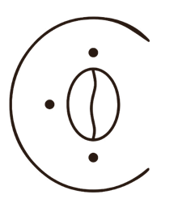
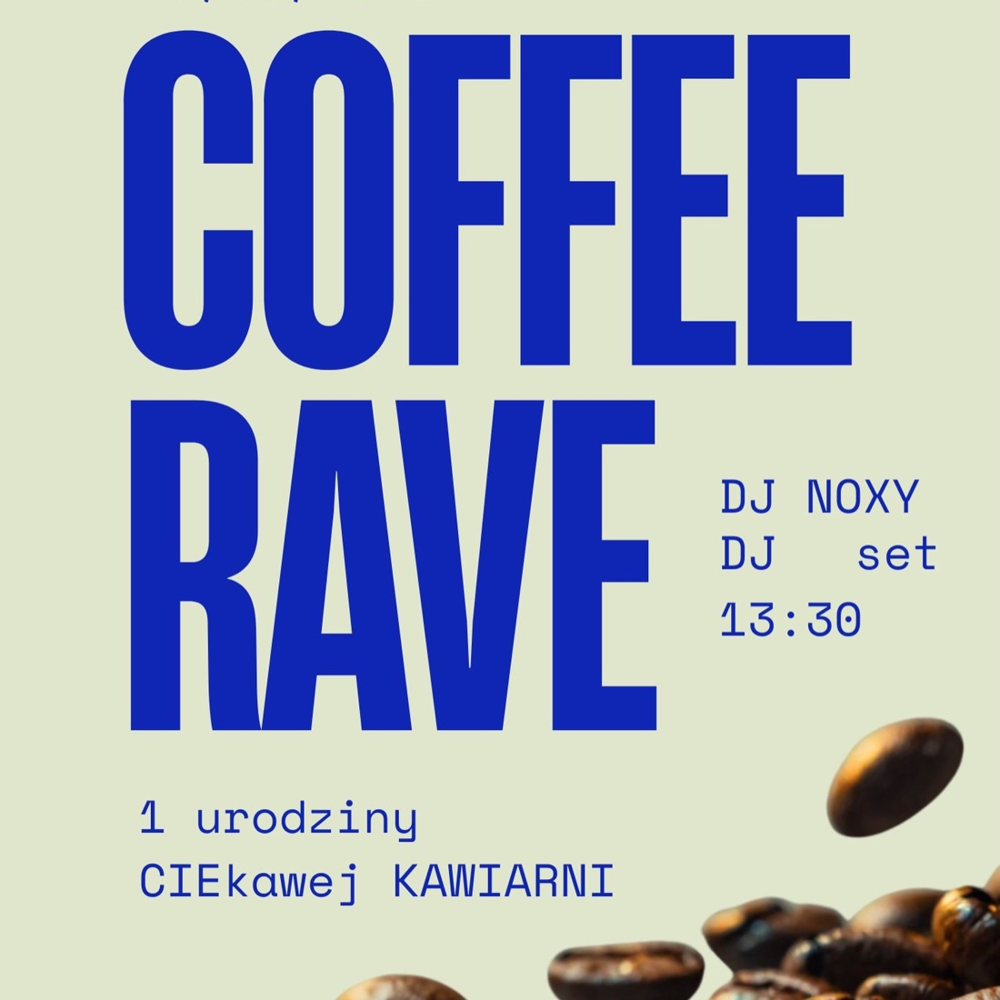

#Speciality
Kawa speciality
z palarni w GdańskuZ ekspresu i z chemexu. Caffè latte malinowe i słony karmel wychodzą najczęściej.
Zamów na wynos
Odwiedź nasTarnobrzeg · ul. Mickiewicza 16
Speciality z gdańskiej palarni, matcha ubijana na miejscu i śniadania, które nie kończą się o jedenastej.
Twoje miejsce z duszą w Tarnobrzegu.
Łączymy aromatyczny świat kawy z lokalną gościnnością i kuchnią, która zaskakuje oryginalnymi połączeniami smaków.
O nas

Nad wejściem wisi napis „Kawa to dopiero początek…”. To nie slogan — to opis planu.
CIEkawa powstała z wieloletniego marzenia Angeliki i Daniela Jackowskich o miejscu w Tarnobrzegu, które łączy pasję do dobrej kawy i jedzenia z kulinarną kreatywnością. Zawodowo są specjalistami w innych branżach, ale do gastronomii wracali od lat — i w końcu postawili wszystko na jedną kartę.
Marzyliśmy o tym od dawna. Chcieliśmy stworzyć miejsce, które będzie dla nas i naszych gości jak dom, gdzie ludzie będą chcieli wracać dla atmosfery, smaku i spotkań.
Angelika Jackowska
Lokal jest niewielki — mieści około 20 osób — a ogródek pozwala zjeść na świeżym powietrzu. Znajdziesz go przy ulicy Mickiewicza, w sąsiedztwie Witryny Sztuki. Właściciele planują tu także wydarzenia kulturalne i warsztaty.
Co u nas znajdziesz
Karta zmienia się z sezonem — poniżej to, co wraca najczęściej i po co przychodzą stali goście.
Z ekspresu i z chemexu. Caffè latte malinowe i słony karmel wychodzą najczęściej.
Zamów na wynos
Późnym latem tropikalna — na soku pomarańczowym z puree z marakui.
Wpadnij na kubek
Poranek Sułtana, shakshuka, zakwas z guacamole i łososiem. Bez godziny granicznej.
Zarezerwuj stolik
Sernik baskijski, hałka, sałatka Kozimierz z malinami i kozim serem, schiacciata.
Sprawdź, co dziś
Przyjazne dzieciom i psom, dobre do pracy na laptopie. Prowadzą Angelika i Daniel.
Jak dojechać
Twoje miejsce z duszą
Łączymy aromatyczny świat kawy z lokalną gościnnością i kuchnią, która zaskakuje oryginalnymi połączeniami smaków.
Każda kawa wychodzi stąd zrobiona ręcznie — od zmielenia ziarna po rozetę na mleku.

To już rok, odkąd razem z Wami tworzymy CIEkawą. Świętujemy dniem pełnym kawy, muzyki i dobrej energii — w muzyczną podróż zabierze nas NOXY, start o 13:30.
Opinie
Na Facebooku poleca nas 100% recenzentów. Poniżej fragmenty tego, co goście napisali sami.
Ale perełka na mapie Tarnobrzegu — tu wszystko ma sens! Pierwszego dnia jedliśmy pyszne kanapki, które zachęciły nas, żeby wrócić kolejnego dnia.
Zostawiam maksymalne oceny za wszystkie aspekty. Pyszne śniadania, wyborne ciasta i świetna kawa.
Caffè latte malinowe i słony karmel — obydwie kawy sztos. Zero posmaku chemii, czysta przyjemność i odskocznia od klasycznej kawy.
Odwiedź nas
Lokal 63A, w sąsiedztwie Witryny Sztuki. Parking w okolicy, ogródek od frontu.
| Poniedziałek | 9:00 – 18:00 |
|---|---|
| Wtorek | 9:00 – 18:00 |
| Środa | 9:00 – 18:00 |
| Czwartek | 9:00 – 18:00 |
| Piątek | 9:00 – 18:00 |
| Sobota | 9:00 – 18:00 |
| Niedziela | 10:00 – 18:00 |